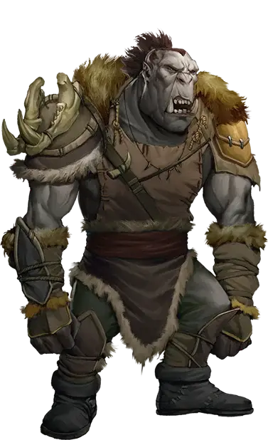

Орк
Orc

Орки ведут свою родословную от одноглазого бога Груумша, неудержимого воина и могущественного лидера. Божественные качества Груумша находят отклик в орках, даруя им его твердость и упорство, с которыми невозможно сравниться, и бог снабдил своих детей возможностью жить как над землей, так и под землей.
В некоторых мирах, таких как Эберрон, орки были одними из первых защитников естественного порядка от посягательств Исчадий и других внепланарных угроз. Благословения Груумша сделали орков неутомимыми стражами и могущественными союзниками, где бы они ни находились, даже когда они обращают свою приверженность к другим богам.
Особенности орка
Вы обладаете следующими особенностями.
Увеличение характеристик. Либо значение одной характеристики по вашему выбору увеличивается на 2, а другой — на 1, либо значение трёх различных характеристик по вашему выбору увеличивается на 1.
Скорость. Ваша базовая скорость ходьбы — 30 футов.
Вид существа. Вы — Гуманоид.
Размер. Ваш размер — Средний.
Тёмное зрение. На расстоянии 60 футов вы при тусклом освещении можете видеть так, как будто это яркое освещение, и в темноте так, как будто это тусклое освещение. В темноте вы не можете различать цвета, только оттенки серого.
Выброс адреналина. Бонусным действием вы можете совершить действие Рывок. Вы можете использовать эту особенность количество раз, равное вашему бонусу мастерства. Вы восстанавливаете все потраченные использования по окончании продолжительного отдыха и вы можете использовать её один раз за ход.
Каждый раз, когда вы используете эту особенность, вы получаете количество временных хитов, равное вашему бонусу мастерства.
Мощное телосложение. Вы считаетесь на один размер больше, когда определяется ваша грузоподъемность и вес, который вы можете толкать, тянуть или поднимать.
Непоколебимая стойкость. Если ваши хиты опустились до 0, но вы при этом не убиты, ваши хиты вместо этого опускаются до 1. Вы не можете использовать эту особенность снова, пока не закончите продолжительный отдых.
Языки. Ваш персонаж может говорить, читать и писать на Общем и ещё одном языке, который по вашему мнению подходит для персонажа.